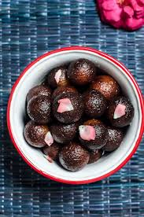

Home
Gulab Jamun

Description
Indulge in the exquisite sweetness of Gulab Jamun - a classic Indian dessert that enchants the palate with its rich, syrupy goodness. Crafted from a perfect blend of flour, grated paneer, sooji, baking powder and soda, oil, water, sugar, condensed milk, and fragrant spices, our easy Gulab Jamun recipe pays homage to both taste and tradition.
Ingredients
- 1 cup condensed milk
- 2 cups (200 gm)Flour
- 600 gms Grated Paneer
- 200 gm Sooji/Rava
- 1½ tsp Baking Powder
- 1½ tsp Baking Soda
- Oil for frying
- 2 litres of water
- 1 kg Sugar
- 6-8 nos Coarsely Crushed Cardomom
Steps
- Combine sugar and water in a pan and bring to a boil to create the syrup. Remove from heat, add cardamom, and set aside to cool.
- In a mixing bowl, combine flour, paneer, sooji, condensed milk, baking powder, and baking soda. Mix gently to form a soft dough, avoiding over-kneading.
- Divide the dough into 30-35 portions and gently shape them into round balls.
- Heat oil on low flame and fry the balls until they turn golden brown.
- Transfer the fried Gulab Jamuns into the cooled sugar syrup. Once all the Gulab Jamuns are added, bring the syrup to a boil again briefly, then remove from heat.
- Enjoy your homemade Gulab Jamun warm, garnished with your favourite toppings.